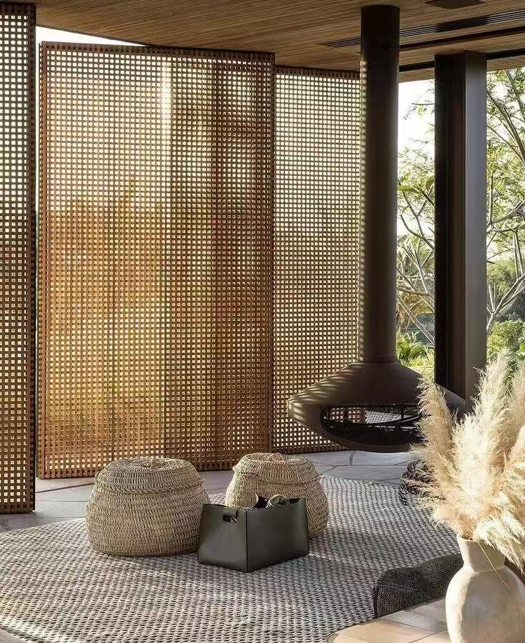
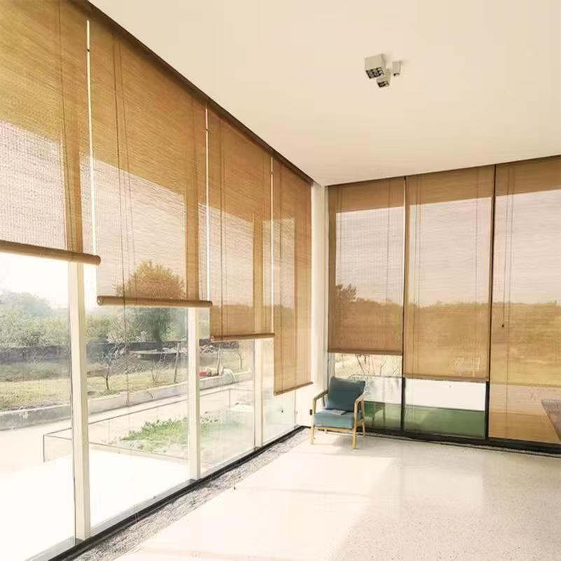

主题名宿
在钢筋水泥的城市之外，有一方被竹影温柔包裹的静谧天地——竹己民宿。“竹己”二字，既点明以竹编为核心的设计灵魂，又暗含“回归本己”的生活哲学，寓意每位旅人都能在此暂别喧嚣，于竹编的经纬世界里，寻得内心的宁静与真实。
踏入竹己，仿佛走进一座流动的竹编艺术博物馆。建筑外观以原生竹子与竹编肌理为基底，与自然山水相映成趣；室内空间更是将竹编工艺发挥得淋漓尽致：竹编吊顶如流云舒展，光影透过细密篾纹洒下斑驳诗意；竹编灯具造型别致，暖黄灯光与竹纹交织，勾勒出温馨氛围；客房内，竹编床头板、收纳筐、屏风错落有致，甚至洗漱用品包装都以竹篾缠绕装饰，每一处细节都诉说着匠人对自然材料的敬意。
竹己民宿，不仅是旅途中的栖居之所，更是一场与竹编文化、与自我内心深度对话的旅程。在这里，竹编不再只是工艺，而是串联生活美学与心灵疗愈的纽带，让每一位客人都能在竹影摇曳间，重拾生活的本真与从容。